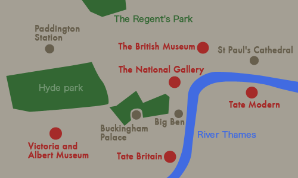

MAP
タクシーや地下鉄を使えば、とてもアクセスしやすい場所に集中してありますが、どのミュージアムも巨大なので、同じ日にはしごして見学できるのは二館くらいかもしれません。
Museums in London
The British Museum
The National Gallery
TATE BRITAIN
TATE MODERN
Victoria and Albert Museum
MAP